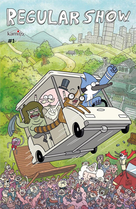

TENGEN TOPPA
GURREN LAGANN
Gurren Lagann tiene lugar en un futuro donde la Tierra está dominada por el Rey Espiral, Lord Genome, que obliga a la humanidad a vivir en aldeas subterráneas aisladas. Estos pueblos no tienen contacto con el mundo de la superficie u otros pueblos, estando bajo la constante amenaza de terremotos.HOW I MET YOUR MOTHER
Trata sobre un joven Ted Mosby que les está contando a sus futuros hijos la historia de cómo conoció a su madre y las historias que les pasan en la ciudad de New York a él y a su grupo de amigos.
